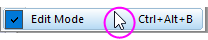

FAQ-941 Warum funktionieren meine Zellenformeln nicht?
Why-are-cell-formulas-not-working
Letztes Update: 08.01.2019
Origin 2017 führte die "vereinfachte Zellennotation" (SCN) zur Verwendung in spaltenbasierten Berechnungen im Dialog Werte setzen ein. Origin 2018 erweiterte die Verwendung der vereinfachten Notationen auf Zellenformeln (Berechnungen auf Zellenebene).
Gelegentlich deaktivieren Anwender die gesamte oder einen Teil der Funktionalität der Zellenformel, entweder über die GUI oder einen LabTalk-Befehl, und vergessen, dass sie es getan haben. Wenn sie zu einem späteren Zeitpunkt versuchen, die Zellenformeln zu verwenden, merken sie, dass es nicht funktioniert.
Vereinfachte Zellennotation muss in der Arbeitsmappe aktiviert sein
- Damit Berechnungen der Zellenformel durchgeführt werden können, muss die Zellennotation für Tabellenkalkulationsblatt in der Arbeitsmappe eingeschaltet sein.
- In den Versionen Origin 2017 bis Origin 2019 ist die vereinfachte Zellennotation standardmäßig für neue Arbeitsmappen eingeschaltet und dieses Symbol wird in der oberen linken Ecke des Arbeitsblatts angezeigt, wenn die SCN aktiviert ist. Seit Origin 2019b ist dieses Symbol verborgen, auch wenn die SCN für neue Arbeitsmappen per Standard aktiviert bleibt.
- Wenn Sie das Symbol der vereinfachten Zellennotation
 in der oberen linken Ecke der Arbeitsmappe sehen (in JEDER Version), klicken Sie mit der rechten Maustaste auf die Titelleiste der Arbeitsmappe und wählen Sie Eigenschaften. Aktivieren Sie auf der Registerkarte Eigenschaften das Kontrollkästchen Zellennotation für Tabellenkalkulationsblatt und klicken Sie auf OK.
in der oberen linken Ecke der Arbeitsmappe sehen (in JEDER Version), klicken Sie mit der rechten Maustaste auf die Titelleiste der Arbeitsmappe und wählen Sie Eigenschaften. Aktivieren Sie auf der Registerkarte Eigenschaften das Kontrollkästchen Zellennotation für Tabellenkalkulationsblatt und klicken Sie auf OK.
- Die vereinfachte Zellennotation kann in jeder Mappe und jedem Projekt aktiviert werden, sogar in denen, die vor Origin 2017 erstellt wurden. Klicken Sie mit der rechten Maustaste auf die Titelleiste der Arbeitsmappe und wählen Sie Eigenschaften. Aktivieren Sie auf der Registerkarte Eigenschaften das Kontrollkästchen Zellennotation für Tabellenkalkulationsblatt und klicken Sie auf OK.
Beachten Sie, dass es LabTalk-Methoden (Skript) zum Deaktivieren der Zellennotation sowohl für eine einzelne Mappe als auch für alle im Projekt vorhandenen Mappen, inklusive neuer Mappen, gibt. Diese werden in der FAQ-849: Kann ich die Zellennotation in meinen Arbeitsmappen ausschalten bzw. selektiv steuern? beschrieben.
Zellenformeln über die GUI oder einen LabTalk-Befehl steuern
Es gibt mehrere Möglichkeiten, Zellenformeln ganz oder teilweise im Origin-Projekt zu deaktivieren (siehe Einzelheiten in FAQ-939).
Zellenformeln über die GUI steuern
Stellen Sie sicher, dass der Editiermodus nicht einfach aktiviert wird:
- Wählen Sie im Origin-Menü Bearbeiten: Editiermodus.
- Steht ein Häkchen neben Editiermodus, klicken Sie auf das Menüelement, um das Häkchen zu entfernen.
-

Zellenformeln über einen LabTalk-Befehl steuern
Stellen Sie sicher, dass die LabTalk-Systemvariable @ESC = 1. Wenn @ESC=0, werden Zellenformeln (z. B. "=A1+B1") als einfacher Text behandelt und Ausdrücke werden nicht gelöst. Dies geschieht, auch wenn das Kontrollkästchen der Arbeitsmappe Zellennotation für Tabellenkalkulationsblatt aktiviert und Origins Editiermodus ausgeschaltet ist.
- Wählen Sie Fenster: Skriptfenster, geben Sie Folgendes ein und drücken Sie Enter:
-
@esc=
- Wenn Origin einen Wert von 0 (@esc = 0) ausgibt, geben Sie Folgendes ein und drücken Sie Enter:
-
@esc=1
Auch wenn @ESC einen Wert von 0 ausgibt, aktivieren Sie den Dialog Systemvariablen festlegen, um zu sehen, ob Sie einen "ESC"-Eintrag haben, der auf 0 gesetzt ist:
- Wählen Sie im Menü Einstellungen: Systemvariablen, um den Dialog Systemvariablen festlegen zu öffnen.
Schlüsselwörter:Berechnung, Tabellenkalkulationsblatt, @RCN, @ESC, page.xlcolname, ClrX